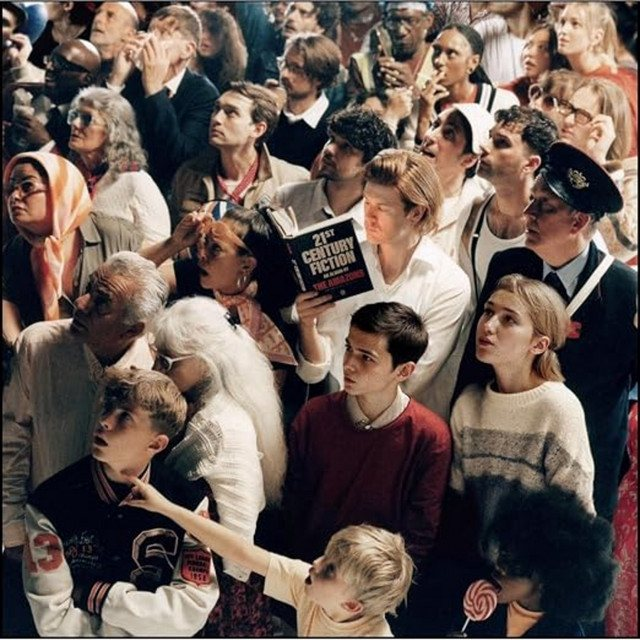

The Eclectic Polymath Podcast · Archive
#113 The Invention of Taste: Class, Culture, and the Social Power of Knowing What’s “Good”

About this episode
Taste feels personal, but it has always been social.
This episode looks at how the modern idea of “good taste” emerged alongside the rise of the middle class, global commerce, and a society where status could no longer rely only on birth or title. As old hierarchies weakened, refinement, connoisseurship, and aesthetic judgment became new ways to signal who belonged, who didn’t, and who understood the codes.
We get into figures like Josiah Wedgwood, the consumer revolution, coffeehouses and salons, Enlightenment debates over beauty, and the way buying the “right” things became a performance of identity. This is a story about how preference became power—and why today’s algorithms, micro-aesthetics, and curated lifestyles are really just the newest version of an old social technology.
Key points
- Taste feels personal, but it has always been social.
- This episode looks at how the modern idea of “good taste” emerged alongside the rise of the middle class, global commerce, and a society where status could no longer rely only on birth or title.
- We get into figures like Josiah Wedgwood, the consumer revolution, coffeehouses and salons, Enlightenment debates over beauty, and the way buying the “right” things became a performance of identity.
More like this
 #217 A Different World: The Sitcom That Refused to EndOctober 16, 202651:08
#217 A Different World: The Sitcom That Refused to EndOctober 16, 202651:08 #204 Symbiopsychotaxiplasm: The Film That Watched ItselfOctober 11, 202645:01
#204 Symbiopsychotaxiplasm: The Film That Watched ItselfOctober 11, 202645:01 #180 Hello Kitty: The Strange Power of CutenessSeptember 27, 20261:07:30
#180 Hello Kitty: The Strange Power of CutenessSeptember 27, 20261:07:30 #175 Chris Hansen: When Investigative Journalism Became a SpectacleSeptember 24, 202653:33
#175 Chris Hansen: When Investigative Journalism Became a SpectacleSeptember 24, 202653:33